Boeing B-17 Flying Fortress (Б-17 «Летающая крепость») — первый серийный американский цельнометаллический тяжёлый четырёхмоторный бомбардировщик.
Самолёт начал проектироваться в 1934 году в рамках конкурса по созданию берегового бомбардировщика, действующего против кораблей. Через год был создан прототип Model 299, первый полёт которого состоялся 28 июля того же года. Заводы фирмы «Боинг» разработали и выпустили B-17 «Летающая крепость» для ВВС США ровно через 12 месяцев. В общей сложности заводы произвели 6981 бомбардировщик B-17 различных модификаций (от опытного Model 299 до B-17G). На заводах фирм «Дуглас» и «Локхид» по лицензии построили ещё 5745 самолётов модификаций B-17F и B-17G. Суммарный выпуск самолёта составил 12 726 единиц.
Бомбардировщик В-17 появился на свет в результате смены военной стратегии США, которая произошла в начале 1930-х годов. Прежде считалось, что США, защищённые от «всего мира» двумя океанами, должны опираться на сугубо оборонную доктрину. В связи с бурным развитием военной техники, но прежде всего с возникновением потребности расширения зоны влияния в Америке родилась концепция «обороны полушария». Для реализации этой концепции в частности потребовалась дальняя авиация, которой у США прежде не было.
8 августа 1934 года Воздушный корпус Армии США объявил тендер на создание тяжёлого бомбардировщика для замены самолёта Martin B-10. Требовалось перевозить «большую бомбовую нагрузку» на высоте трёх километров в течение 10 часов с максимальной скоростью хотя бы 320 км/ч. Были желательны, но не необходимы, дальность в 3200 км и скорость в 400 км/ч. Воздушный корпус искал бомбардировщик для усиления воздушных сил на Гавайях, в Панаме и на Аляске. Конкурсные испытания проходили на аэродроме Райт, около Дейтона, Огайо. Boeing соревновался с Douglas DB-1 и Martin Model 146 за контракт с ВКА США.
Прототип B-17, обозначенный как Модель 299, был создан командой инженеров под руководством Гиффорда Эмери (англ. E. Gifford Emery) и Эдварда Уэлса (англ. Edward Curtis Wells) на собственные средства Boeing. Он сочетал возможности экспериментального бомбардировщика Boeing XB-15 и транспортного Boeing 247. Вооружение B-17 состояло из авиабомб (до 2200 кг на двух стойках в бомбовом отсеке под кабиной пилота) и пяти 7,62 мм пулемётов. Силовая установка состояла из четырёх звездообразных двигателей R-1690 Pratt & Whitney, развивающих мощность в 750 л. с. (600 кВт) на высоте в 2100м.
Впервые Модель 299 была поднята в воздух 28 июля 1935 года пилотом-испытателем Лесом Тауэром (англ. Les Tower). Ричард Вильямс, репортёр Seattle Times, придумал название «Летающая крепость», когда Модель 299 выехала из ангара, ощетинившись пулемётами. В компании Boeing очень быстро поняли ценность прозвища и зарегистрировали его как товарный знак. 20 августа прототип долетел из Сиэтла до аэродрома Райт за 9 часов и 3 минуты со средней скоростью в 378 км/ч, гораздо быстрее конкурентов.
На конкурсных испытаниях четырёхмоторный Boeing продемонстрировал превосходство над двухмоторными DB-1 и Моделью 146. Генерал ВКА США Франк Эндрюс (англ. Frank Maxwell Andrews) убедился в том, что возможности у четырёхмоторного самолёта дальнего действия ощутимо выше, чем у двухмоторного ближнего. С ним соглашались и офицеры снабжения ВКА, и ещё до того, как испытания были закончены, было решено купить шестьдесят пять единиц B-17.
Разработка Модели 299 была продолжена и 30 октября 1935 года лётчик-испытатель ВКА, майор Плоэр Питер Хилл (англ. Ployer Peter Hill) и служащий в Boeing Лес Тауэр произвели второй оценочный полёт. Техсостав аэродрома забыл отключить стояночное стопорение рулей, лётчики не проверили управление и после отрыва от взлётной полосы самолёт резко задрал нос, потерял скорость и разбился; Хилл и Тауэр погибли (больше никто не пострадал при крушении). Прототип Модель 299 не завершил программу испытательных полётов, хотя многие признавали его потенциал, но представители армейского командования были шокированы высокой ценой самолёта. «Потеря была не полной, так как хвостовая часть осталась почти нетронутой и технический состав группы вооружения аэродрома Райт мог использовать как учебный стенд пулемётную точку в хвосте самолёта, однако надежды Boeing на большой контракт по производству бомбардировщиков были разбиты. Начальник штаба армии США, генерал Мэлин Крэйг (англ. Malin Craig), отменил заказ шестидесяти семи единиц Б-17 и заказал вместо них сто тридцать три двухмоторных Douglas B-18 Bolo.»
17 декабря 1936 года ВКА, впечатлённые возможностями прототипа, заказали с помощью лазейки в законе тринадцать прототипов Летающей крепости, YB-17, для эксплуатационных испытаний. YB-17 включал много важных изменений по сравнению с Моделью 299, в том числе и более мощные двигатели Wright Cyclone R-1820-39 с 1200 л. с., заменившие оригинальные модели Pratt & Whitney. Основные конструктивные и аэродинамические проблемы B-17 ещё не были решены. После воздушного инцидента в Калифорнии, раскрывшего недоработки, появилась модель Е, так называемая «толстохвостая», с местом для стрелка в хвосте, надфюзеляжным стабилизатором и вторичной обратной связью двигателя. Стабилизатор значительно улучшил лётно-технические характеристики и прочность конструкции. По общему мнению, летать на этой модели было куда легче, чем на её соперниках — B-24 и Avro Lancaster.
1 марта 1937 года двенадцать из тринадцати единиц YB-17 были доставлены 2-й Бомбардировочной группе на аэродром Лэнгли в Виргинии и использовались для доработки самолёта. В частности, была предложена идея ввести контрольные карты (checklists) для лётного экипажа с тем, чтобы избежать повторения ситуации с прототипом Модель 299. В качестве одного из первых заданий, три YB-17, ведомых главным штурманом, лейтенантом Кёртисом ЛиМейем (англ. Curtis LeMay), получили приказ генерала Эндрюса на «перехват» итальянского лайнера «Рекс», находящегося в 800 морских милях от побережья Америки, и его фотографирование. Успешное выполнение миссии было широко разрекламировано. Тринадцатый YB-17 был доставлен в отделение материального обеспечения на аэродром Райт, Огайо, для дальнейших лётных испытаний.
Четырнадцатый YB-17 (бортовой номер 37-369), изначально создававшийся для наземных испытаний прочности корпуса, был улучшен и оснащён газовыми турбокомпрессорами на выхлопных газах. Этот борт должен был подняться в воздух в 1937 году, но из-за проблем с турбокомпрессорами первый раз он оторвался от земли 26 апреля 1938 года. Модификации стоили Boeing более $100 000 и продолжались до весны 1939 года, но в результате увеличился практический потолок и максимальная скорость. Первый самолёт был поставлен в войска 31 января 1939 года и получил название B-17A для обозначения первого боевого варианта.
В конце 1937 года ВКА заказал ещё десять самолётов, обозначенных как B-17B, и, чуть позже, ещё двадцать девять. Были увеличены закрылки, рули и установлен плексигласовый нос. Самолёты были поставлены в войска между июлем 1939 и мартом 1940 годов. Ими были вооружены две бомбардировочные группы — на восточном и западном побережьях США.
Перед атакой Японии на Перл-Харбор чуть менее 200 единиц B-17 состояли на вооружении армии США, но производство значительно ускорилось, и B-17 стал первым действительно массово выпускаемым крупным самолётом. Самолёт участвовал в боях над всеми театрами Второй мировой войны и его производство закончилось только в мае 1945 года. Всего был произведён 12 731 самолёт на заводах Boeing, Douglas и Vegaruen (подразделение Lockheed).
Самолёт сразу стал легендой, в частности, благодаря своей способности возвращаться на аэродром даже при значительных повреждениях (так, были случаи, когда самолёт возвращался на базу при одном работающем двигателе из четырёх, с огромными дырами в корпусе и почти разрушенным хвостовым оперением). Девять (позднее — двенадцать) пулемётов Браунинг M2 калибра 12,7 мм обеспечивали достаточную защиту[Прим. 1]. Была слабая защита спереди при лобовой атаке истребителей: из 27 фрагментов броневой защиты и противозенитных экранов ни один не защищал экипаж от лобовой атаки. При попадании в лобовую часть из пушки или даже пулемёта экипаж оказывался совершенно незащищённым.
Другой характерной особенностью B-17 было использование высокоточного бомбового прицела системы Нордена. Прицел позволял производить эффективное бомбометание с высоты более семи километров.
Конструкция самолёта B-17 последовательно претерпела восемь значительных изменений в процессе производства. Последний вариант, B-17G, отличался от предшественника носовой подфюзеляжной стрелковой установкой с двумя 12,7-мм пулемётами M2 Browning, которая устранила основное уязвимое направление от атаки спереди.
На базе B-17 был создан целый «комбайн» постановщика помех для глушения немецких станций орудийной наводки типа «Вюрцбург». На борт поставили 18 передатчиков, разведывательные приёмники, а антенн пришлось поставить так много, что самолёт весь «ощетинился» и получил прозвище «летающий дикобраз».
Королевские военно-воздушные силы Великобритании
Королевские ВВС вступили во Вторую мировую войну не имея собственных тяжёлых бомбардировщиков: «Стирлинги» и «Галифаксы» поступили на вооружение лишь в 1941. Поэтому в 1940 году КВВС заключает соглашение с Воздушным корпусом армии США на поставку 20 единиц B-17, обозначенных как Крепость 1 (англ. Fortress I ). Впервые B-17 использовались в атаке на Вильгельмсхафен 8 июля 1941. Американцы обычно летали на высоте 6000 м, но англичане предпочитали 9000 м, что снижало опасность перехвата истребителями. Однако большая высота снижала точность бомбометания, кроме того из-за низкой температуры замерзала смазка в пулемётах. 24 июля был нанесён удар по другой цели — военным объектам в Бресте, но опять безрезультатно. До сентября 1941 года Королевские ВВС потеряли восемь B-17C в бою и авариях, в итоге бомбардировочное командование отказалось от дневных операций. Оставшиеся самолёты были распределены между различными службами, включая прибрежную оборону. Полученный опыт показал, что B-17C требует доработки: усиления бронирования, увеличения бомбовой нагрузки и разработки новых методов прицельного бомбометания; все это было реализовано в последующих версиях. Воздушное командование США по-прежнему надеялись использовать B-17 как дневной бомбардировщик. Бомбардировочное командование передало оставшиеся Крепости 1 прибрежной авиации для использования в качестве патрульного самолёта дальнего радиуса действия. Позже было дополнительно передано 19 единиц Крепость тип 2 и 45 единиц Крепость тип 2А (B-17F и B-17E, именно в этом порядке — ВКА заказал модель с литерой 'F' до заказа с литерой 'Е'). Крепость из 206-й эскадрильи Королевских ВВС потопил немецкую подводную лодку U-627 27 октября 1942 — это была первая из 11 подводных лодок, записанных на счёт «Крепостей» из Королевских ВВС в течение всей войны.
ВВС США
Воздушный корпус (переименован в Военно-воздушные силы армии США в 1941 г.) использовал B-17 и другие бомбардировщики для атак с большой высоты с помощью секретного в то время бомбового прицела «Norden», который включал в себя гиростабилизированное аналоговое вычислительное устройство. Прицел автоматически вычислял момент сброса на основе введенных оператором данных. Для того чтобы расчёт был точным, требовался горизонтальный полёт по прямой и с постоянной скоростью. Для этого, при подлёте к точке сброса, бомбардир включал прицел в режим автопилота, внося лишь небольшие коррективы в курс. При достижении расчётной точки, прицел автоматически производил сброс бомб.
ВВС США начали наращивать свои силы в Европе с помощью B-17E вскоре после вступления в войну. Первые самолёты 8-й воздушной армии прибыли в Верхний Уэйкомб (англ. High Wycombe), Англия 12 мая 1942 года, где из них сформировали 97-ю бомбардировочную группу. 17 августа 1942 года 18 самолётов B-17E из 97-й бомбардировочной группы, включая Олух Янки (англ. Yankee Doodle), ведомые майором Полом Тиббетсом и бригадным генералом Эйра Икером и в сопровождении Спитфайров Королевских ВВС вылетели в первый налёт, имея целью железнодорожную сортировочную станцию около Руана, Франция. Операция прошла успешно, только два самолёта получили незначительные повреждения.
В Люфтваффе
Во время Второй мировой войны в результате вынужденных посадок немцы захватили около 40 бомбардировщиков B-17, около дюжины из них после восстановительного ремонта летали в составе Люфтваффе. На самолёты были нанесены немецкие опознавательные знаки и им было присвоено кодовое наименование «Dornier Do 200». Захваченные B-17 в основном использовались эскадрой Kampfgeschwader 200 для выполнения секретных операций и разведывательных задач. Один из бомбардировщиков B-17 эскадры KG200 с бортовым номером A3+FB после посадки 27 июня 1944 года в аэропорту Валенсии был интернирован до конца войны Испанией. Некоторые захваченные B-17 с опознавательными знаками союзников использовались немцами для проникновения в строй бомбардировщиков для слежения за их курсом и высотой. Поначалу такая тактика приносила некоторый успех, однако экипажи B-17 быстро разработали и внедрили процедуру опознавания и правила открытия огня по «странным» самолётам, пытающимся присоединиться к строю. Также B-17 применялись немцами для исследования уязвимых мест бомбардировщиков и тренировки лётчиков-истребителей. В конце войны войска союзников обнаружили несколько уцелевших немецких B-17.
СССР
США не поставляли B-17 в Советский Союз, однако как минимум 73 самолёта использовались ВВС СССР. Эти машины совершили вынужденную посадку из-за механических проблем после нанесения бомбовых ударов по объектам на территории Германии. Советские ВВС восстановили 23 единицы до рабочего состояния, но всего один самолёт был использован по прямому назначению Брянским авиаполком в 1945 году. B-17-G-50-DL номер 44-6316 поступил в 45 ТБАД 11 февраля 1945 года. Когда самолёт нашли, в первую очередь нанесли красные звёзды по бортам фюзеляжа. Оставшаяся маркировка говорит о том, что самолёт принадлежал 358-й бомбардировочной эскадрилии 303-й бомбардировочной группы. В 1946 году они были переданы на Казанский авиационный завод для помощи в копировании Boeing B-29.
ВВС Израиля
В 1948 году несколько B-17 поступили на вооружение ВВС Израиля. Они достаточно активно применялись[источник не указан 3795 дней] в ходе первой арабо-израильской войны (1948—1949) и эпизодически — во время Синайской кампании 1956 года[источник не указан 3795 дней].
| 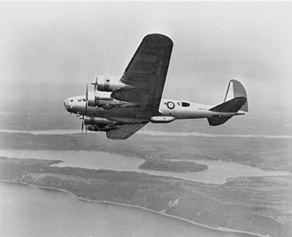 |
| 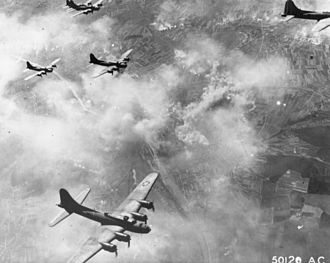 |
| 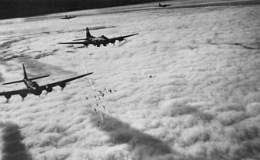 |
| 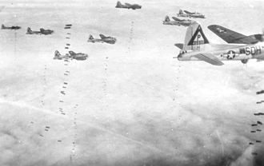 |
| 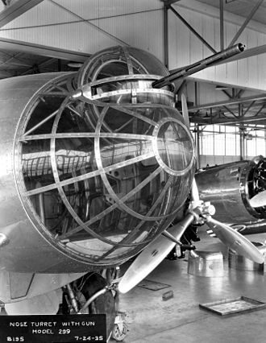 |
| 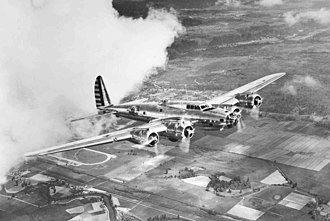 |
| 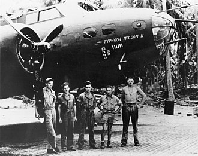 |
| 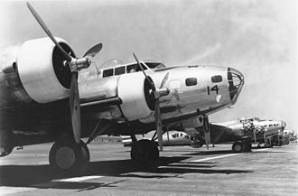 |
| 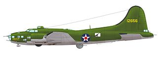 |
| 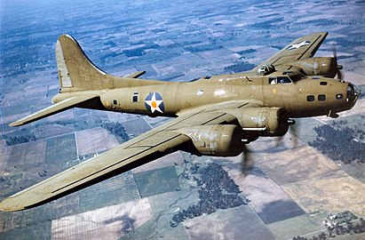 |
| 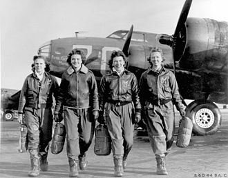 |